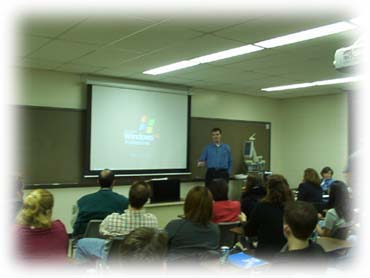
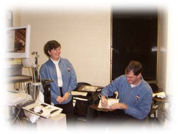
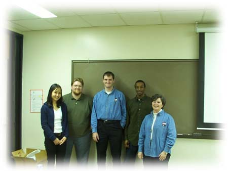

02/21/2002
Kevin Grossnicklaus from
Systems Service Enterprises has given an interesting presentation about
VB.Net and the .NET Framework. Kevin is also the contributing author for VB.NET
Bible.
If you missed the meeting, here is a copy of Kevin's
Power Point Presentation.

If you want to learn more about the .NET Framework, he recommended these
websites:
www.msdn.microsoft.com
St Louis .NET Users Group (www.stlnet.org)
Linda Fournier is an IT recruiter from Systems Service Enterprises. Her
presentation gave us valuable information on how to write a resume targeting for
an IT career.
Take a look at Linda's presentation.
Here are the good resume examples that she brought:
Software Engineer Resume
Technical Support Specialist Resume
Senior Network Engineer Resume

Kevin signing VB.Net Bible for the lottery winner. He donated
the book to our club to be given as a lottery prize.

Kevin, Linda and the officers of ISPC.